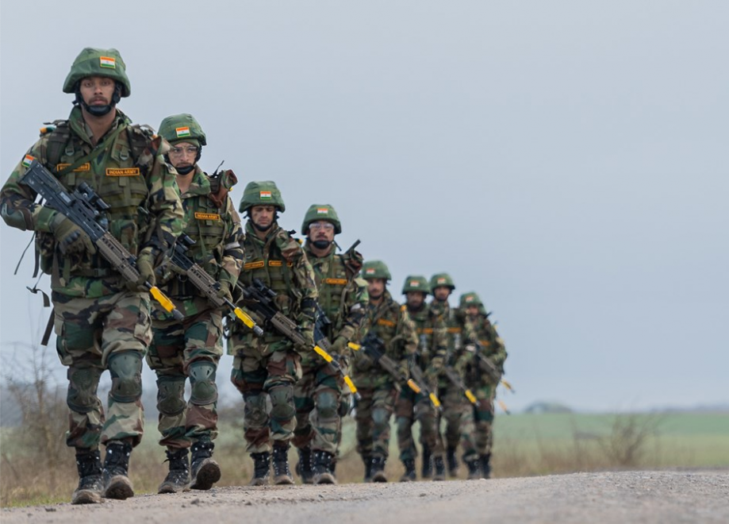
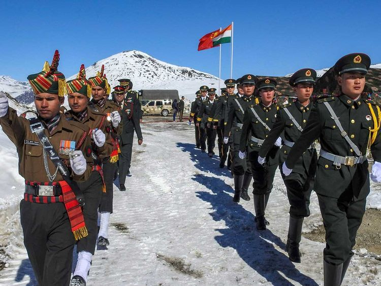
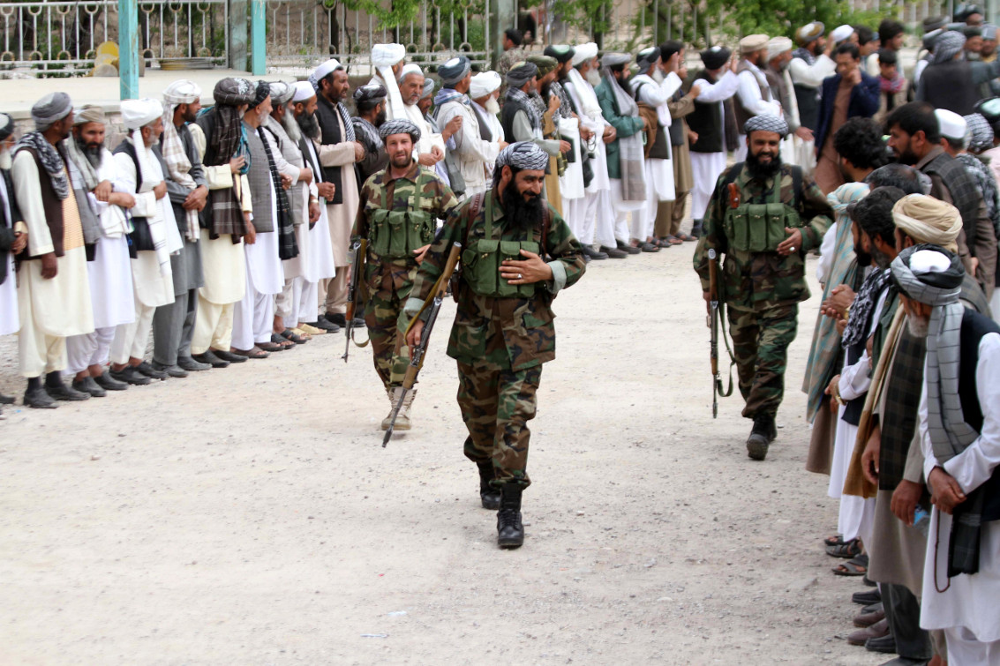
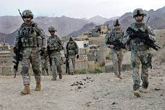
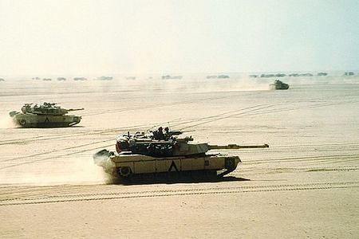

Wojna chińsko-indyjska
Czas: 20 października – 21 listopada 1962
Miejsce: Aksai Chin, Arunachal Pradesh

Strony:
Siły:
- Indie - 10 000 - 12 000
- Chiny - 80 000
Wynik: zwycięstwo Chin
Straty:
- Indie - 1 383
- Chiny - 722

Wojna w Afganistanie
Czas: 7 października 2001 - 29 lutego 2020
Miejsce: Afganistan

Strony:
- Stany Zjednoczone, Nato, Isaf
- Talibowie, inne grupy islamistyczne
Siły:
- Stany Zjednoczone, Nato, Isaf - 513 734
- Talibowie, inne grupy islamistyczne - 80 000 – 100 000
Wynik: odsunięcie Talibów od sprawowania władzy w Afganistanie
Straty:
- Stany Zjednoczone, Nato, Isaf - 64 875
- Talibowie, inne grupy islamistyczne - 60 000

I wojna w Zatoce Perskiej
Czas: 2 sierpnia 1990 – 3 marca 1991
Miejsce: Zatoka Perska

Strony:
- Kuwejt, Koalicja państw pod przywództwem USA
- Irak
Siły:
- Kuwejt, Koalicja państw pod przywództwem USA - 90 000
- Irak - 50 000
Wynik: zwycięstwo koalicji antyirackiej, wyzwolenie Kuwejtu
Straty:
- Kuwejt, Koalicja państw pod przywództwem USA - 1 592
- Irak - 20 000